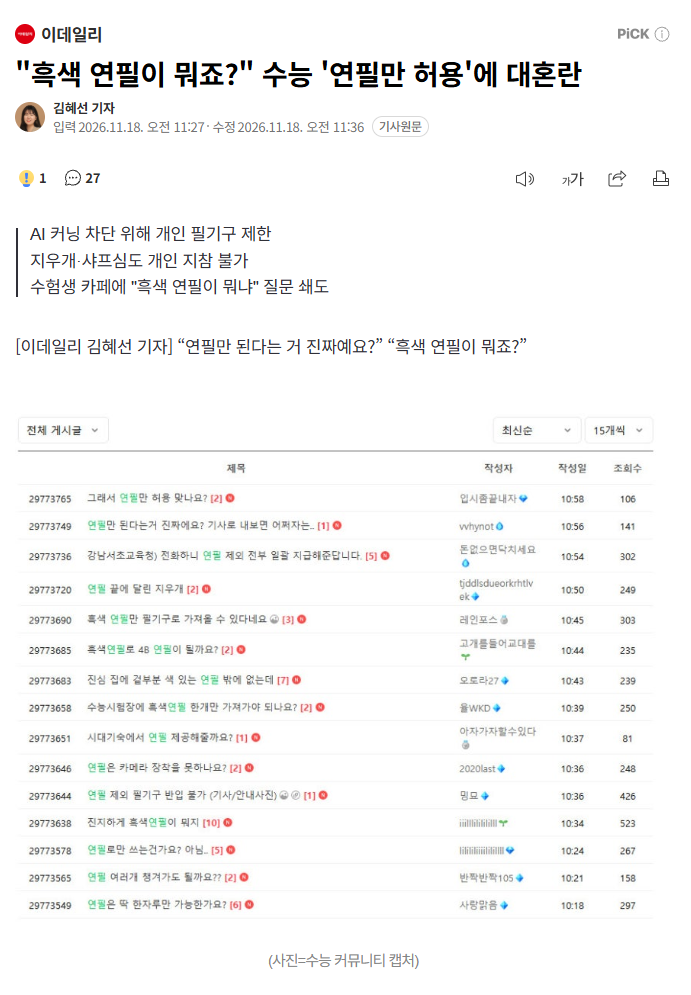
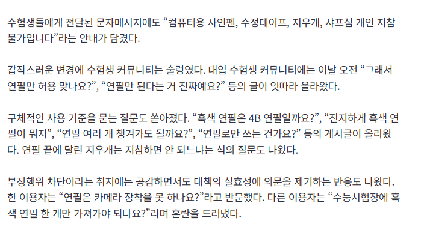

https://n.news.naver.com/article/018/0006411736
쓰읍..........


https://n.news.naver.com/article/018/0006411736
쓰읍..........
많아진게 아니라 기자가 어그로 끈거임
기자 쉑들 하여튼 씹
흑색 연필은 흑색 연필이라는 뜻입니다
근대 연필 ㅈㄴ불편해서 어떤학생에겐 시험에 영향줄듯
나 초등학교 저학년이후로 연필 써본적도 없는데
그 서걱 거리는 느낌이 너무 소름끼쳐서 못씀
닭살돋고 너무 신경쓰임
그정도로 영향받을거면 그냥 망하는게 맞음
사과 깎으면 기절하겠네
사과는 ㄱㅊ
그 느낌이 다르다해야하 주파수가 다름
남들은 걍 시발 병신새끼인가인대
내가 소름돋아서 못쓰겠다는데 어캐함
그정도로 예민하면 다른 일상도 예민할거같은데 어때? 일상생활엔 지장없어?
오회말 카드 연필로도 인식됨?
연필로도 인식 될텐데 만에 하나를 생각해서 컴싸 쓰라는거
예전엔 4b연필인가 썼었지 않나?
오회말이 아니라 OMR이야... ㅎㅎ
그걸 몰라서 저렇게 쓰진 않았을거같은디
JLPT는 컴싸 안되고 연필만 쓰긴 함 근데 수능은 어차피 컴싸 주니까 걍 밴때린듯?
지우개 카메라가 많던데....
지우개도 주려나
빨리 지정해줘야 제작 들어간다고~~~
국평오.. 흑색 연필 뜻도 모르면 그냥 바로 취업이나 하자
진짜..코로나 시절 후유증인가 빡통대가리 많아졌나보네